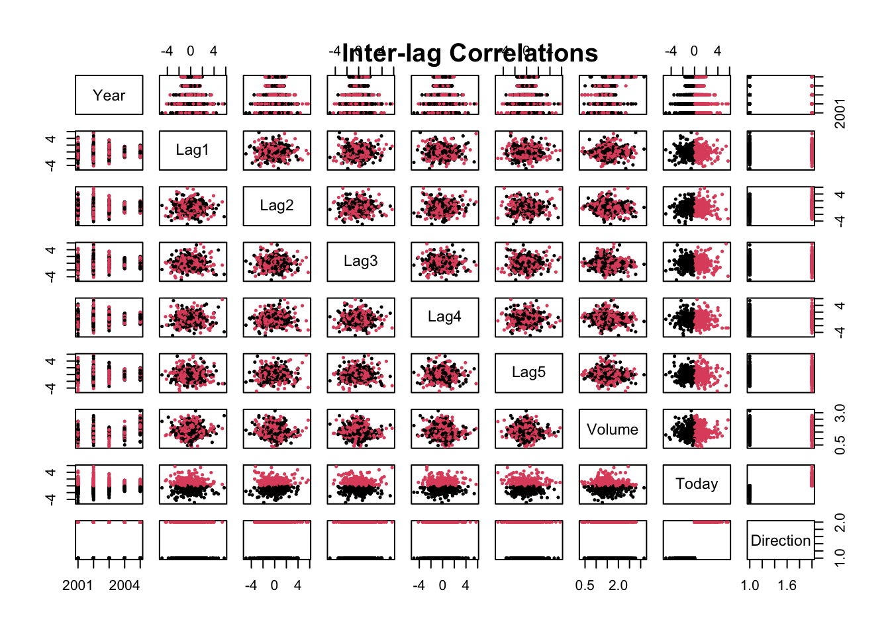

# Setup CRAN Mirror
options(repos = c(CRAN = "https://cran.rstudio.com/"))
# Load ISLR package
require(ISLR)Lab06 Logistic Regression Lab
1 Introduction
This document demonstrates how to apply Logistic Regression using the Smarket dataset from the ISLR package. We will explore model fitting, prediction, and performance evaluation using training and test sets.
2 Setup
First, we need to load the required package and dataset.
3 Data Exploration
We will begin by exploring the structure and summary statistics of the Smarket dataset.
# Check dataset structure
?Smarket
names(Smarket)[1] "Year" "Lag1" "Lag2" "Lag3" "Lag4" "Lag5"
[7] "Volume" "Today" "Direction"summary(Smarket) Year Lag1 Lag2 Lag3
Min. :2001 Min. :-4.922000 Min. :-4.922000 Min. :-4.922000
1st Qu.:2002 1st Qu.:-0.639500 1st Qu.:-0.639500 1st Qu.:-0.640000
Median :2003 Median : 0.039000 Median : 0.039000 Median : 0.038500
Mean :2003 Mean : 0.003834 Mean : 0.003919 Mean : 0.001716
3rd Qu.:2004 3rd Qu.: 0.596750 3rd Qu.: 0.596750 3rd Qu.: 0.596750
Max. :2005 Max. : 5.733000 Max. : 5.733000 Max. : 5.733000
Lag4 Lag5 Volume Today
Min. :-4.922000 Min. :-4.92200 Min. :0.3561 Min. :-4.922000
1st Qu.:-0.640000 1st Qu.:-0.64000 1st Qu.:1.2574 1st Qu.:-0.639500
Median : 0.038500 Median : 0.03850 Median :1.4229 Median : 0.038500
Mean : 0.001636 Mean : 0.00561 Mean :1.4783 Mean : 0.003138
3rd Qu.: 0.596750 3rd Qu.: 0.59700 3rd Qu.:1.6417 3rd Qu.: 0.596750
Max. : 5.733000 Max. : 5.73300 Max. :3.1525 Max. : 5.733000
Direction
Down:602
Up :648
# Create a dataframe for data browsing
sm = Smarket
# Bivariate Plot of inter-lag correlations
pairs(Smarket, col = Smarket$Direction, cex = .5, pch = 20)
title("Inter-lag Correlations")
4 Logistic Regression Model
We will fit a logistic regression model to predict the Direction variable (Up/Down) using the lag variables (Lag1, Lag2, Lag3, Lag4, Lag5) and Volume.
# Fit the logistic regression model
glm.fit = glm(Direction ~ Lag1 + Lag2 + Lag3 + Lag4 + Lag5 + Volume, data = Smarket, family = binomial)
# Display model summary
summary(glm.fit)
Call:
glm(formula = Direction ~ Lag1 + Lag2 + Lag3 + Lag4 + Lag5 +
Volume, family = binomial, data = Smarket)
Coefficients:
Estimate Std. Error z value Pr(>|z|)
(Intercept) -0.126000 0.240736 -0.523 0.601
Lag1 -0.073074 0.050167 -1.457 0.145
Lag2 -0.042301 0.050086 -0.845 0.398
Lag3 0.011085 0.049939 0.222 0.824
Lag4 0.009359 0.049974 0.187 0.851
Lag5 0.010313 0.049511 0.208 0.835
Volume 0.135441 0.158360 0.855 0.392
(Dispersion parameter for binomial family taken to be 1)
Null deviance: 1731.2 on 1249 degrees of freedom
Residual deviance: 1727.6 on 1243 degrees of freedom
AIC: 1741.6
Number of Fisher Scoring iterations: 35 Generating Predictions
We can generate predictions from the model and compare the predicted values to the actual market direction.
# Predict probabilities
glm.probs = predict(glm.fit, type = "response")
# Display first 5 predictions
glm.probs[1:5] 1 2 3 4 5
0.5070841 0.4814679 0.4811388 0.5152224 0.5107812 # Convert probabilities to class labels
glm.pred = ifelse(glm.probs > 0.5, "Up", "Down")
# Create confusion matrix to compare predictions with actual values
attach(Smarket)
table(glm.pred, Direction) Direction
glm.pred Down Up
Down 145 141
Up 457 507# Calculate accuracy
mean(glm.pred == Direction)[1] 0.52166 Training and Test Sets
To evaluate the model on unseen data, we split the dataset into training (before 2005) and test sets (2005 data).
# Define training set (before 2005)
train = Year < 2005
# Fit model using training set
glm.fit = glm(Direction ~ Lag1 + Lag2 + Lag3 + Lag4 + Lag5 + Volume, data = Smarket, family = binomial, subset = train)
# Predict on test set (2005 data)
glm.probs = predict(glm.fit, newdata = Smarket[!train, ], type = "response")
glm.pred = ifelse(glm.probs > 0.5, "Up", "Down")
# Compare predictions with actual 2005 data
Direction.2005 = Smarket$Direction[!train]
table(glm.pred, Direction.2005) Direction.2005
glm.pred Down Up
Down 77 97
Up 34 44# Calculate accuracy on test set
mean(glm.pred == Direction.2005)[1] 0.48015877 Fitting a Smaller Model
To simplify the model, we can fit a logistic regression with fewer predictors (Lag1 and Lag2).
# Fit a smaller logistic regression model
glm.fit = glm(Direction ~ Lag1 + Lag2, data = Smarket, family = binomial, subset = train)
# Predict on test set (2005 data)
glm.probs = predict(glm.fit, newdata = Smarket[!train, ], type = "response")
glm.pred = ifelse(glm.probs > 0.5, "Up", "Down")
# Compare predictions with actual 2005 data
table(glm.pred, Direction.2005) Direction.2005
glm.pred Down Up
Down 35 35
Up 76 106# Calculate accuracy on test set
mean(glm.pred == Direction.2005)[1] 0.55952388 Model Accuracy
Finally, we calculate the accuracy of the model on the test set.
# Calculate accuracy of the smaller model
accuracy = 106 / (76 + 106)
accuracy[1] 0.58241769 Conclusion
In this lab, we have explored logistic regression using the Smarket dataset to predict stock market direction. We fit models using lag variables and volume as predictors, generated predictions, and evaluated model accuracy on test data.